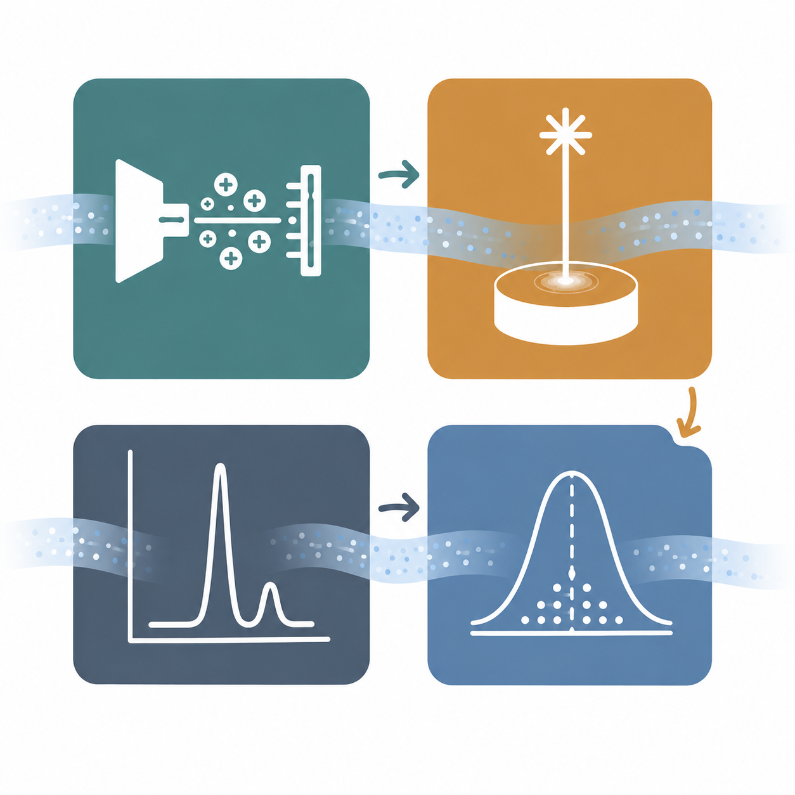

BMFTR funded streamFind: 01.09.2022 - 31.08.2025

Fast-forward to the project end: StreamFind R package
Create, manage and run workflows
Full project lifecycle for data processing workflows, including provenance tracking.

Analytical workflows Validated, reusable workflows for mass spectrometry, spectroscopy, chromatography, and statistics. Expandable and interactive reporting
Modular expansion of analytical processing methods and flexible interactive HTML reports.
Expandable and interactive reporting
Modular expansion of analytical processing methods and flexible interactive HTML reports.
How to use StreamFind?
R scripting interface
library(StreamFind)
project <- MassSpecEngine$new(
metadata = list(
name = "Example project",
author = "Ricardo Cunha"
)
)
workflow <- Workflow(list(
Method_NonTargetAnalysis_FindFeatures(),
Method_NonTargetAnalysis_LoadFeaturesMS1(),
Method_NonTargetAnalysis_LoadFeaturesMS2()
))
project$Workflow <- workflow
project$run()R Shiny GUI

Same project model through a guided interface:
- Configure metadata and working directory
- Load analyses; assign replicate or blank groups
- Assemble, validate, and run workflows
- Inspect results, reports, and the audit trail
However, StreamFind is still not accessible to everyone

New project: CogniFlow

What is analytical data processing?
Analytical data processing should turn instrument measurements and experiment metadata into validated, FAIR results — a goal that is hard to achieve consistently today.

Findabletraceable data
Accessibleusable by others
Interoperablestandard formats
Reusablereproducible results

Funded by: